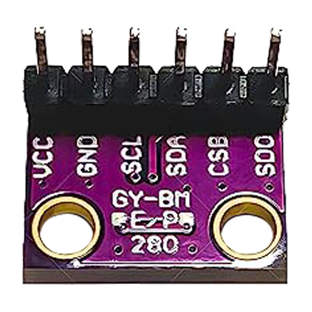
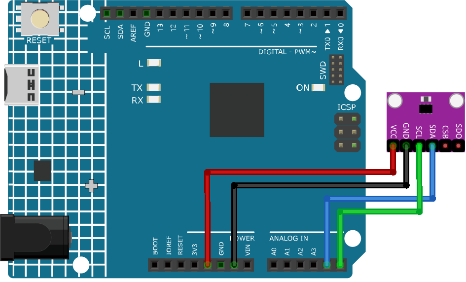

注釈
こんにちは、SunFounderのRaspberry Pi & Arduino & ESP32愛好家コミュニティへようこそ！Facebook上でRaspberry Pi、Arduino、ESP32についてもっと深く掘り下げ、他の愛好家と交流しましょう。
参加する理由は？
エキスパートサポート：コミュニティやチームの助けを借りて、販売後の問題や技術的な課題を解決します。
学び＆共有：ヒントやチュートリアルを交換してスキルを向上させましょう。
独占的なプレビュー：新製品の発表や先行プレビューに早期アクセスしましょう。
特別割引：最新製品の独占割引をお楽しみください。
祭りのプロモーションとギフト：ギフトや祝日のプロモーションに参加しましょう。
👉 私たちと一緒に探索し、創造する準備はできていますか？[ここ]をクリックして今すぐ参加しましょう！
温度、湿度、気圧センサー（BMP280）


はじめに
GY-BMP280-3.3高精度気圧センサーモジュールは、大気圧と温度を高精度で測定できるデバイスです。このモジュールにより、気象状況のモニタリングや高度、気圧データを使用したプロジェクトが実現可能です。
原理
GY-BMP280-3.3高精度気圧センサーモジュールは、Bosch製のBMP280センサーを使用して圧力と温度の両方を測定します。このBMP280センサーには、密封された金属チャンバー内に圧電抵抗式圧力センサーとサーミスタが搭載されています。圧電抵抗式センサーは、チャンバーに加えられた圧力に応じて抵抗値を変更し、サーミスタはチャンバー内の温度に応じて抵抗値を変更します。このモジュールには、これらの抵抗値をデジタル信号に変換し、ArduinoにI2CまたはSPIインターフェースで送信する集積回路が組み込まれています。
使い方
使用する電子部品
Arduino Uno R4またはR3ボード * 1
温度、湿度、気圧センサー（GY-BMP280-3.3） * 1
ジャンパーワイヤー
回路組み立て


コード
注釈
ライブラリをインストールするには、Arduino Library Managerで "Adafruit BMP280" と検索してインストールしてください。
コード説明
ライブラリのインクルードと初期化。必要なライブラリがインクルードされ、BMP280センサーはI2Cインターフェースを使用して通信のために初期化されます。
注釈
ライブラリをインストールするには、Arduino Library Managerで "Adafruit BMP280" と検索してインストールしてください。
Adafruit BMP280ライブラリ：このライブラリは、BMP280センサーから温度、圧力、高度を簡単に読み取るためのインターフェースを提供します。
Wire.h：I2C通信に使用されます。
#include <Wire.h> #include <Adafruit_BMP280.h> #define BMP280_ADDRESS 0x76 Adafruit_BMP280 bmp; // use I2C interface
setup()関数では、シリアル通信を初期化し、BMP280センサーの存在を確認し、デフォルトの設定でセンサーを設定します。void setup() { Serial.begin(9600); while (!Serial) delay(100); Serial.println(F("BMP280 test")); unsigned status; status = bmp.begin(BMP280_ADDRESS); // ... (rest of the setup code)
loop()関数では、BMP280センサーから温度、圧力、高度のデータを読み取り、シリアルモニターに表示します。void loop() { // ... (read and print temperature, pressure, and altitude data) delay(2000); // 2-second delay between readings. }
追加アイデア
シリアルモニターに加えて、または代わりにLCDディスプレイモジュールを使用して読み取り値を表示します。
温度と圧力の閾値を設定し、これらが超過された場合にブザーまたはLEDで警告します。